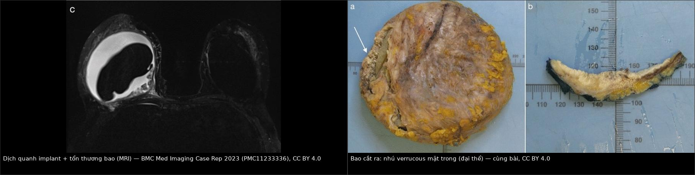
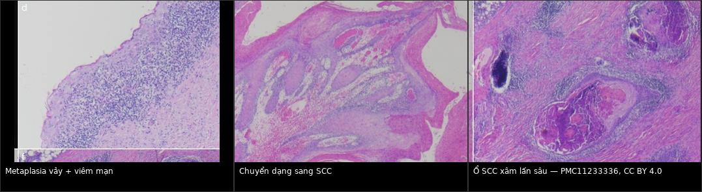
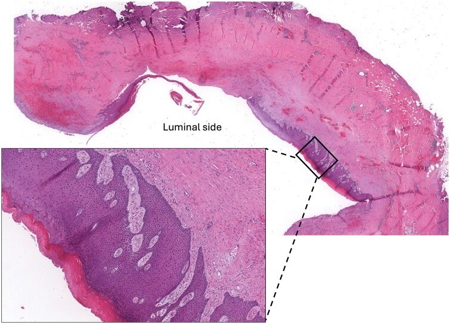
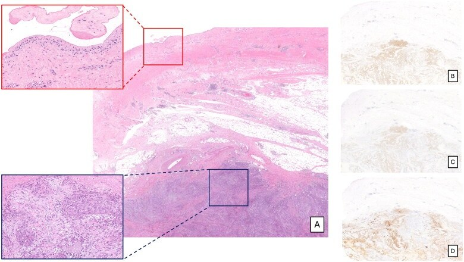
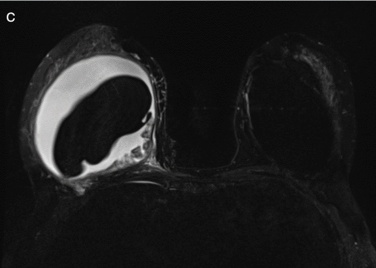
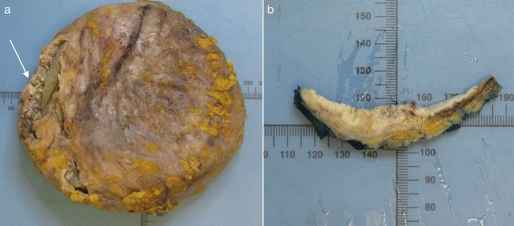

1655 — Ung thư biểu mô vảy trong bao implant ngực (BIA-SCC) / Breast implant capsule-associated squamous cell carcinoma
Tags: pattern:khoi-bao-implant pattern:day-bao pattern:dich-quanh-implant vung:vu protocol:MRI-vu protocol:PET-CT protocol:sieu-am-vu incidentaloma:dich-quanh-implant
Mức chắc chắn (certainty): tổng hợp y văn (literature synthesis) — biên từ 4 bài toàn văn mở: tổng quan hệ thống 18 ca (Niraula S và cs, Cancers 2023, PMC10526244, CC BY 4.0), tổng quan hệ thống + ca nguyên văn (Badri D, Copertino N, Aesthetic Plast Surg 2024, PMC11233336, CC BY 4.0), ca nguyên văn + bảng 21 ca (Villegas-Gomez GA và cs, J Med Case Rep 2026, PMC13685378, CC BY-NC-ND — chỉ dẫn link, không tái sử dụng ảnh), và bài phân biệt với ung thư biểu mô chuyển sản (Rogges E và cs, Case Reports Plast Surg Hand Surg 2025, PMC11995762, CC BY 4.0). Số liệu không đồng nhất giữa các tổng quan — ghi rõ nguồn từng con số.
1. Tổng quan — vì sao bao implant lại sinh ra ung thư vảy, và vì sao hình ảnh hay bị đọc nhầm
- Bản chất bệnh học: bao xơ quanh implant là mô sẹo do phản ứng dị vật. Lớp lót trong bao có thể biểu mô hóa (epithelialization) → chuyển sản vảy (squamous metaplasia) → loạn sản → ung thư biểu mô vảy xâm lấn. Đây là ung thư sinh ra từ bao, không phải từ nhu mô tuyến vú — điểm này quyết định cả chẩn đoán lẫn phân biệt với ung thư biểu mô chuyển sản (metaplastic carcinoma) của tuyến vú.
- TẠI SAO viêm mạn tính lại là động lực: ma sát cơ học + màng sinh học vi khuẩn (biofilm) trên vỏ implant + rò gel vi thể → viêm mạn tại chỗ, tăng sinh tế bào lát và tích lũy đột biến. Giả thuyết "vỏ implant phải rách trước" không đứng vững: trong các ca báo cáo đủ dữ liệu, ~80% implant còn nguyên vỏ khi mổ (PMC11233336). Vỏ nhám (textured) không phải điều kiện bắt buộc: 27,2% textured, 36,4% smooth, 36,4% không ghi (PMC11233336).
- TẠI SAO hình ảnh khó: tổn thương nằm sát mặt trong bao, dày vài mm tới vài cm, cùng tín hiệu thấp với bao xơ trên T1/T2 → dễ bị coi là "bao dày do xơ hóa" (bài 1653). Trên MRI, SCC là mô đặc giàu tế bào: T1 trung bình/thấp, T2 trung bình–thấp, hạn chế khuếch tán (ADC thấp), ngấm thuốc không đều, khác với dịch (T2 rất sáng, ADC cao, không ngấm).
- TẠI SAO hay có dịch: tế bào vảy bong vào khoang quanh implant + phản ứng viêm → dịch đục, trắng, sệt như kem; nhưng dịch không phải lúc nào cũng có (xem số liệu dưới).
- Số liệu nằm lòng:
- Ung thư biểu mô vảy nguyên phát của tuyến vú (không liên quan implant) chỉ chiếm 0,04–0,1% mọi ung thư vú (PMC13685378).
- BIA-SCC cực hiếm: 18 ca trong tổng quan hệ thống đến 10/2022 (PMC10526244); 19 ca trong tổng quan của Niraula; ~20–21 ca trong y văn đến 2025–2026 (PMC13685378). FDA ra thông báo an toàn 9/2022, cập nhật 3/2023.
- Tuổi: trung bình 56 (40–81) (PMC10526244) · trung vị 52 (IQR 46–60) (Niraula).
- Thời gian tiềm tàng: trung bình 21 năm (10–35) (PMC10526244) · trung vị 20 năm (IQR 15–35) (Niraula) · trung bình 24,9 năm (PMC11233336) — đây là bệnh của implant đã nằm > 15 năm, không phải biến chứng sớm.
- Triệu chứng: sưng 84,2%, đau 73,7%, đỏ da 21,1% (Niraula); tổng quan 18 ca: sưng 16/18, đau 15/18.
- Loại implant: silicone 58,8% (trong đó 42,9% textured); 18 ca đầu: silicone 10, silicone lỏng 2, saline 5.
- Khối: ở 13 ca có số đo, đường kính lớn nhất trung bình 4,9 cm (SD 1,9), khoảng 1,5–8 cm; ca PMC11233336 có tổn thương 100 mm — lớn nhất trong y văn.
- Dịch quanh implant trên hình ảnh: KHÔNG có ở bất kỳ ca nào trong 18 ca của PMC10526244 — trái với định kiến "seroma muộn = ALCL/SCC".
- Tiên lượng: tử vong 6 tháng 11,1% (95% CI 0,5–40,6), 12 tháng 23,8% (2,8–56,1) (PMC10526244); ASPS công bố 43,8% ở 6 tháng — chênh lệch lớn vì khác phương pháp ước tính, cần nói rõ khi tư vấn. Sống toàn bộ 1 năm 80,8%, sống không bệnh 1 năm 53,0% (Niraula, theo dõi trung vị 9 tháng).
2. Mẫu hình + chẩn đoán phân biệt theo vị trí (Gamut)
- Mẫu hình cốt lõi: phụ nữ có implant > 10–15 năm, sưng/đau vú một bên tiến triển, siêu âm/MRI thấy dịch quanh implant ± khối/dày bao khu trú mặt trong bao; có thể không có dịch mà chỉ có khối.
- Gamut theo vị trí:
- Mặt trong bao (capsule lining): BIA-SCC, BIA-ALCL, xơ hóa bao (bài 1653), mảnh vỏ gãy (bài 1656), u hạt silicone, viêm mạn.
- Trong khoang quanh implant: seroma muộn, máu tụ muộn, dịch nhiễm, dịch do rò gel.
- Ngoài bao/thành ngực: SCC xâm lấn cơ ngực – thành ngực, tái phát ung thư vú, di căn hạch nách/ngực trong.
- Nhu mô tuyến vú (không phải bao): ung thư biểu mô chuyển sản thể vảy (metaplastic carcinoma) — bắt chước mô bệnh học số 1, nhưng xuất phát từ nhu mô, không từ bao.
- Mnemonic "CAPSULE" cho khối/dày bao muộn: Carcinoma vảy (BIA-SCC), ALCL, Pseudo-capsule xơ hóa, Silicone granuloma, Ulcer/viêm mạn, Leak/rupture (bài 1656), Extension của ung thư vú tái phát.
- Điểm phân nhánh quyết định: có tế bào vảy trong dịch/sinh thiết hay không. Tế bào vảy không có trong bao bình thường — thấy là cờ đỏ, kể cả khi tế bào học "chưa kết luận ác tính" (đã có ca coi là "nhiễm bẩn" rồi chẩn đoán muộn — PMC11233336).
3. Bảng so sánh phân biệt (ma trận đối chiếu)
| Thực thể (entity) | Hình ảnh điển hình | Chốt vào (rule-in) | Chốt loại (rule-out) | Gợi ý xác nhận |
|---|---|---|---|---|
| BIA-SCC | Dịch quanh implant ± khối/dày bao khu trú mặt trong bao; nhú verrucous; MRI: tổn thương bám bao, ngấm thuốc, hạn chế khuếch tán; có thể xâm lấn cơ ngực | Tế bào vảy điển hình/ác tính + p63 dương + CK5/6 dương, tổn thương xuất phát từ bao | CD30 dương mạnh/ALK−, chỉ có tế bào lympho → ALCL; tổn thương trong nhu mô, cách bao → chuyển sản | FNA dịch (tế bào học, cấy, flow cytometry, CD30/ALK, CK5/6, p63) + sinh thiết lõi khối; PET/CT |
| BIA-ALCL | Dịch muộn > 1 năm thường là dấu hiệu chính; khối trong bao; dày bao; hạch nách | Tế bào lympho ác tính CD30 dương mạnh, ALK âm trong dịch/bao | Có tế bào vảy/p63 dương → SCC; dịch trong, không tế bào lạ | Tế bào học dịch + flow cytometry + CD30/ALK (bài 1654) |
| Ung thư biểu mô chuyển sản thể vảy (metaplastic carcinoma) | Khối trong nhu mô tuyến vú, có thể hoại tử/nang; không bám bao implant | Mô bệnh: thành phần vảy + thành phần biểu mô tuyến/trung mô, vị trí trong nhu mô | Tổn thương chỉ ở mặt trong bao, không có thành phần tuyến → BIA-SCC | Sinh thiết đủ lớn + IHC (p63, CK5/6, ER/PR/HER2); đối chiếu vị trí trên MRI |
| Xơ hóa bao (capsular contracture) | Bao dày đều, không có khối rời, không ngấm thuốc bất thường; Baker III–IV trên lâm sàng | Dày đều, đối xứng, không tổn thương khu trú | Dày khu trú > 5 mm, bờ không đều, ngấm thuốc → phải loại u | So phim cũ; MRI; nếu khu trú → sinh thiết (bài 1653) |
| Seroma muộn lành tính | Dịch đơn giản, không khối, không dày bao khu trú | Dịch trong, không tế bào lạ, không khối, ổn định khi theo dõi | Dịch phức tạp, có mảng/mảnh vụn, khối, dày bao → loại | Siêu âm lặp 4–8 tuần; FNA nếu > 1 năm hoặc không giảm |
| Nhiễm trùng bao/implant | Đỏ nóng, sốt, đau tăng nhanh; dịch đục, vách; CRP/bạch cầu tăng | Sốt + đỏ nóng + cấy dương/mủ | Không sốt, cấy âm, dịch trong → loại | Chọc hút cấy; kháng sinh; dẫn lưu/tháo nếu nặng |
| Rách vỏ implant (bài 1656) | US "stepladder"/"snowstorm"; MRI "linguine"/"teardrop" | Bằng chứng vỏ gãy trên MRI/US | Vỏ liên tục trên MRI chuỗi silicone → loại | MRI 1,5T chuỗi silicone; US |
| U hạt silicone/siliconoma | Khối giảm âm, có thể vôi hóa; FDG dương giả trên PET; hạch "snowstorm" | Tiền sử rò gel/rách vỏ + mô bệnh u hạt dị vật, không tế bào ác | Tế bào vảy/p63 dương → SCC; tổn thương bám bao tiến triển → loại | Mô bệnh + Raman/X-quang tán sắc; PET không đủ loại trừ |
| Tái phát ung thư vú | Khối ngoài bao, bờ không đều, xâm lấn cơ/thành ngực; hạch nách | Mô bệnh ung thư vú, ER/PR/HER2 theo u cũ | Tổn thương chỉ trong bao, p63+/CK5/6+ → BIA-SCC | MRI + sinh thiết; so hồ sơ xạ trị/mổ cũ |

Trái: MRI axial — dịch quanh implant phải với tổn thương bám mặt trong bao, bờ không đều; implant trái bình thường. Phải: bao cắt ra — nhú verrucous vàng mặt trong bao, có vùng xơ dày. Nguồn: Aesthetic Plast Surg 2024 (PMC11233336), CC BY 4.0. Ảnh ghép letterbox, giữ nguyên tỷ lệ, không crop.
Trái: chuyển sản vảy + thâm nhiễm viêm mạn; giữa: vùng chuyển dạng sang ung thư vảy; phải: ổ tế bào vảy xâm lấn sâu trong bao. Cùng bài PMC11233336, CC BY 4.0. Đây là cơ sở mô bệnh cho "hiệu ứng trường" (field effect): chuyển sản, loạn sản và ung thư nằm cạnh nhau trong cùng một bao.Ba con số quyết định thái độ
- > 15 năm: thời gian tiềm tàng trung vị 20 năm — một khối/dày bao ở implant 20 năm không được mặc định là xơ hóa.
- 4,9 cm: đường kính khối trung bình khi được chẩn đoán — đa số đến muộn, nên khối nhỏ bất thường vẫn phải sinh thiết.
- 0 ca hạch gác dương tính trong 18 ca đầu (PMC10526244) — nhưng hạch nách/ngực trong vẫn có thể dương trên PET và đã có ca di căn hạch (PMC13685378), nên không được bỏ qua đánh giá hạch.
4. Protocol chụp + hệ phân độ/điểm chuẩn hóa
- Siêu âm (đầu tay): 2 bên + hố nách + chuỗi ngực trong; mô tả dịch (đơn giản/phức tạp), khối/dày bao khu trú, nhú trong lòng, vôi hóa; Doppler mô tả mạch nuôi. Siêu âm là phương thức được dùng nhiều nhất trong các ca BIA-SCC (PMC10526244).
- MRI 1,5T trở lên, coil vú: T2 SPAIR ± chuỗi chọn silicone (silicone-only, ức chế nước) + chuỗi ức chế silicone; tiêm cản từ khi có khối/dày bao khu trú (đánh giá ngấm thuốc, xâm lấn cơ ngực/thành ngực). MRI đánh giá tốt hơn CT/US mức lan và thành ngực — nhiều ca phải mổ lại vì xâm lấn ngoài bao chỉ phát hiện khi mổ (PMC10526244, PMC13685378).
- Chọc hút dịch quanh implant (bắt buộc khi có dịch): gửi tế bào học + cấy + flow cytometry + hóa mô miễn dịch (CD30, ALK, CK5/6, p63). Dịch thường trắng, sệt, đục; tế bào vảy không phải "nhiễm bẩn".
- Sinh thiết lõi khối/dày bao khu trú (không chỉ FNA) để có mô đủ phân biệt SCC với chuyển sản carcinoma và ALCL.
- PET/CT toàn thân trước mổ khi đã xác định BIA-SCC (phân giai đoạn xa, hạch ngực trong); không dùng PET để chẩn đoán vì u hạt/viêm cũng tăng FDG.
- Không có RADS riêng cho BIA-SCC. Khung xử lý hiện hành là khuyến cáo sơ bộ của ASPS (2023) + thực hành trong các tổng quan; dùng BI-RADS cho tổn thương nhu mô kèm theo, không dùng để phân độ BIA-SCC.
- Mô bệnh sau mổ: mọi bao cắt ra phải gửi giải phẫu bệnh — kể cả bao "trông bình thường", vì chuyển sản/loạn sản có thể khu trú.
flowchart TD
A[Phụ nữ có implant, sưng/đau vú muộn hơn 1 năm] --> B[Siêu âm 2 bên + hố nách + chuỗi ngực trong]
B --> C{Có dịch quanh implant?}
C -->|Có| D[Chọc hút: tế bào học, cấy, flow cytometry, CD30/ALK, CK5/6, p63]
C -->|Không| E[MRI 1,5T: T2 SPAIR + chuỗi silicone + cản từ]
E --> F{Có khối hoặc dày bao khu trú?}
F -->|Có| G[Sinh thiết lõi khối/dày bao]
F -->|Không| H[Theo dõi theo lịch; giáo dục dấu hiệu muộn]
D --> I{Tế bào vảy, p63+, CK5/6+?}
G --> I
I -->|Có| J[PET/CT phân giai đoạn]
I -->|Không, CD30+ ALK-| K[BIA-ALCL: theo NCCN]
I -->|Không, tế bào khác| L[DDx: chuyển sản carcinoma, tái phát, nhiễm, u hạt]
J --> M[Hội chẩn đa chuyên khoa]
M --> N[Cắt toàn bộ bao + tháo implant ± cắt tuyến vú ± thành ngực]
N --> O[Giải phẫu bệnh toàn bộ bao + đánh giá hạch]
- Điều trị (theo y văn, không có RCT): cắt toàn bộ bao (total capsulectomy) + tháo implant là nền tảng; ~63,6% ca được cắt tuyến vú bổ sung; một số cần cắt thành ngực. Hóa–xạ không chứng minh lợi ích rõ trong các ca đã báo cáo; quyết định theo giai đoạn và hội chẩn (PMC10526244, PMC11233336, PMC13685378).
- Theo dõi: lâm sàng + hình ảnh vú/thành ngực 3–6 tháng/lần trong 2–3 năm đầu (thực hành trong các ca), vì tái phát sớm 2 tháng đã được báo cáo; sống không bệnh 1 năm chỉ 53,0%.
5. Biến thể bình thường và cạm bẫy
- Chuyển sản vảy KHÔNG phải ung thư: bao implant bình thường hoặc viêm mạn rất hay có chuyển sản vảy (xem ảnh dưới). Chẩn đoán SCC đòi xâm lấn qua màng đáy + dị dạng nhân + mất cực tính, không chỉ "thấy tế bào vảy".

Mặt trong bao (luminal side) phủ lớp chuyển sản vảy trưởng thành, không xâm lấn — bắt chước lành tính của BIA-SCC. Nguồn: Case Reports Plast Surg Hand Surg 2025 (PMC11995762), CC BY 4.0.- Cạm bẫy 1 — coi tế bào vảy trong dịch là "nhiễm bẩn": đã có ca tế bào vảy bị bỏ qua, chẩn đoán chậm (PMC11233336). Tế bào vảy không thuộc bao vú bình thường.
- Cạm bẫy 2 — "không có dịch thì không phải SCC": trong 18 ca tổng quan, không ca nào có dịch quanh implant trên hình ảnh; thể điển hình là khối/dày bao, có ca chỉ có khối nang có nhú (PMC13685378). Bỏ qua khối vì "không có seroma" là bỏ sót.
- Cạm bẫy 3 — đổ cho rách vỏ: 80% ca có implant nguyên vỏ; rách vỏ (bài 1656) là bệnh cảnh khác, không loại trừ và không giải thích SCC.
- Cạm bẫy 4 — nhầm với chuyển sản carcinoma: cả hai đều p63+/CK5/6+. Chốt là vị trí xuất phát (mặt trong bao vs nhu mô) + có thành phần biểu mô tuyến/trung mô hay không. Cần sinh thiết đủ và đối chiếu MRI.

Khối tế bào vảy xâm lấn mô mỡ, cách mặt trong bao (A), kèm hóa mô miễn dịch (B–D) — tức tổn thương xuất phát từ nhu mô, không phải từ bao. Đây là lý do phải mô tả vị trí trên hình ảnh trước khi gọi BIA-SCC. Nguồn: PMC11995762, CC BY 4.0.- Cạm bẫy 5 — PET dương giả: u hạt silicone, viêm bao, hạch phản ứng đều tăng FDG; PET chỉ dùng phân giai đoạn, không dùng để chẩn đoán.
- Cạm bẫy 6 — đánh giá thấp xâm lấn: MRI có thể không thấy xâm lấn cơ ngực; đã có ca mổ mới phát hiện (PMC13685378). Cần hội chẩn + chuẩn bị phương án cắt rộng trước mổ.
6. Tự lượng giá — Blind Quiz
Ca 1 — Nữ 56 tuổi, implant silicone textured đặt 22 năm, sưng và đau vú phải 6 tháng.

- Gợi ý lâm sàng: không sốt, không chấn thương; siêu âm trước đó chỉ "dịch quanh implant".
- Câu hỏi: Mô tả tổn thương? Ba chẩn đoán phân biệt? Bước tiếp theo bắt buộc trước khi mổ?
Bấm để hiện đáp án (findings + chẩn đoán)
- Dấu hiệu (findings): dịch quanh implant phải, thành phần tổn thương dày, bờ không đều bám mặt trong bao ở phía sau–trong; implant trái bình thường. Dịch không đơn thuần — có mô đặc bám bao.
- Chẩn đoán (diagnosis): BIA-SCC (xác nhận bằng mô bệnh: SCC biệt hóa vừa, p63+/CK5/6+). Phân biệt: BIA-ALCL (dịch muộn là dấu hiệu chính, CD30+/ALK−), xơ hóa bao, u hạt silicone.
- Bước bắt buộc: chọc hút dịch + sinh thiết lõi khối, gửi tế bào học, cấy, flow cytometry, CD30/ALK, CK5/6, p63; sau đó PET/CT trước mổ.
- Nguồn ảnh: Aesthetic Plast Surg 2024 (PMC11233336), Fig. 1c, CC BY 4.0 — cắt panel từ hình gốc.
Ca 2 — Cùng bệnh nhân, bao implant sau cắt.

- Câu hỏi: Mô tả bất thường đại thể? Vì sao phải gửi toàn bộ bao giải phẫu bệnh?
Bấm để hiện đáp án (findings + chẩn đoán)
- Dấu hiệu: mặt trong bao có nhú/giả nhú verrucous vàng, xơ dày không đều; mặt cắt thấy tổn thương kem, xâm lấn vào bao.
- Chẩn đoán: BIA-SCC; tổn thương lan 100 mm — lớn nhất trong y văn tại thời điểm báo cáo.
- Vì sao gửi toàn bộ bao: chuyển sản/loạn sản/ung thư có thể khu trú cạnh vùng lành (hiệu ứng trường); cắt bỏ một mảnh có thể bỏ sót ổ xâm lấn hoặc bỏ sót diện cắt.
- Nguồn ảnh: PMC11233336, Fig. 1a–b, CC BY 4.0 — cắt panel.
Ca 3 — Hai tiêu bản của hai bệnh nhân khác nhau, cùng "tế bào vảy" trong bao.
- Gợi ý: bệnh nhân A cắt bao vì xơ hóa, không khối, không dịch; bệnh nhân B có khối bám bao tiến triển.
- Câu hỏi: Tiêu bản này của ai? Ba tiêu chí mô bệnh phân biệt chuyển sản vảy lành tính với SCC?
Bấm để hiện đáp án (findings + chẩn đoán)
- Dấu hiệu: lớp chuyển sản vảy trưởng thành, cực tính giữ, không xâm lấn qua màng đáy, không có nhân dị dạng — của bệnh nhân A (lành tính).
- Ba tiêu chí phân biệt SCC: (1) xâm lấn qua màng đáy vào mô bao/mỡ; (2) dị dạng nhân, mất cực tính, nhân chia bất thường; (3) mất sắp xếp lớp + hoại tử/keratin bất thường. Chỉ "thấy tế bào vảy" không đủ.
- Cạm bẫy: cả hai đều p63+/CK5/6+ → IHC không tự phân biệt được; phải dựa hình thái + vị trí.
- Nguồn ảnh: Case Reports Plast Surg Hand Surg 2025 (PMC11995762), Fig. 2, CC BY 4.0.
Bài liên quan chéo
- 1654 — Dịch quanh implant muộn & BIA-ALCL (bệnh cảnh "dịch muộn" kinh điển, CD30)
- 1656 — Rách vỏ implant & gel bleed (vỏ gãy, linguine, snowstorm)
- 1653 — Cơ rút bao xơ implant ngực (xơ hóa cơ ngực) (dày bao lành tính)
- 510 — Vú: BI-RADS nhũ ảnh – siêu âm – MRI (ngôn ngữ BI-RADS cho tổn thương nhu mô kèm theo)
Ảnh
- Tên file:
1655_BIA-SCC_MRI_PMC11233336-Fig1c.jpg,1655_BIA-SCC_dai-the_PMC11233336-Fig1ab.jpg,1655_metaplasia-vay_vi-the_PMC11995762-Fig2.jpg,1655_ung-thu-bieu-mo-sap-vi-the_PMC11995762-Fig1.jpg,composite_1655_MRI-va-dai-the.jpg,composite_1655_vi-the.jpg. - Nguồn + giấy phép từng ảnh:
images/CREDITS.md. Các panel được cắt từ figure gốc CC BY 4.0 (CC BY cho phép phái sinh; đã ghi rõ "cắt panel"). - Bài PMC13685378 (CC BY-NC-ND) chỉ dẫn link, không tái sử dụng ảnh: https://europepmc.org/article/PMC/PMC13685378
Không dùng để chẩn đoán độc lập khi chưa có người hướng dẫn.